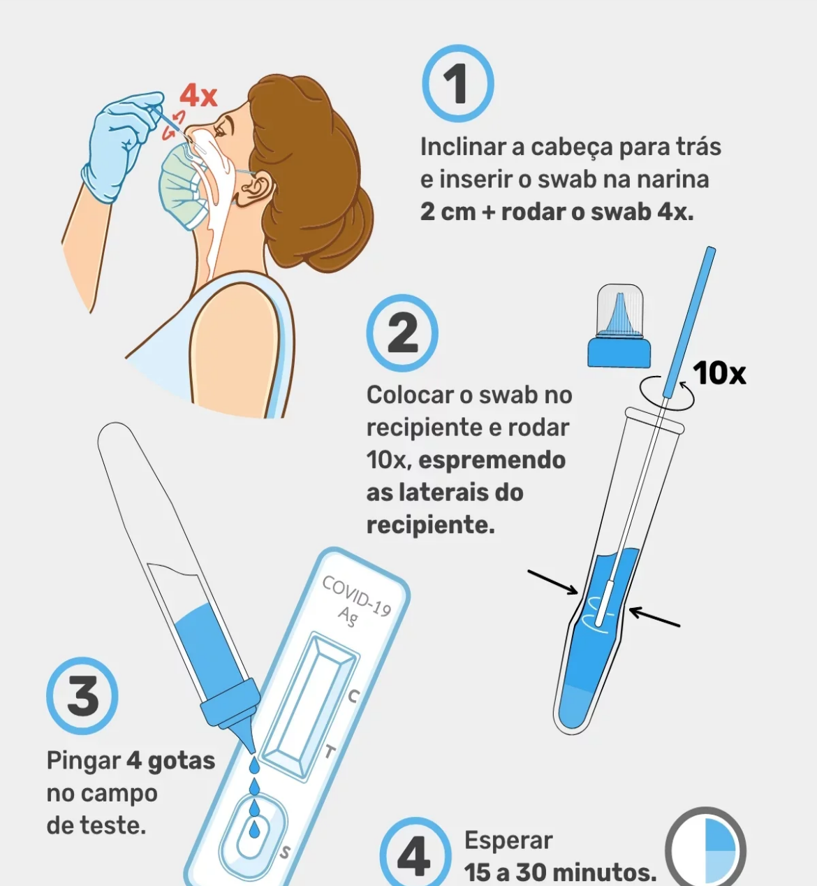

O autoteste para COVID é um exame semelhante ao teste rápido de antigênio da farmácia, mas que pode ser feito em casa sem a necessidade de um profissional de saúde, apresentando um resultado entre 15 a 30 minutos.
Este teste está recomendado para pessoas que apresentam sintomas sugestivos de COVID-19, como tosse, febre, dor de garganta ou cansaço excessivo, podendo ser feito entre o 1º e 7º dia de sintomas. Ao contrário dos testes de farmácia, o autoteste é feito introduzindo-se o swab (cotonete) apenas na parte frontal do nariz, não sendo necessário introduzir até à nasofaringe, o que torna o processo mais fácil, menos invasivo e mais confortável.
Embora permita identificar a presença de partículas do SARS-CoV-2 nas secreções, este teste não é considerado um exame de diagnóstico, já que um resultado positivo deve ser sempre confirmado por um exame de RT-PCR, realizado em uma clínica ou hospital, para confirmar o diagnóstico de COVID-19.
Como fazer o autoteste
1. Preparar o kit
Lavar as mãos com água e sabão ou utilizar um desinfectante;
Verificar o prazo de validade da embalagem. Caso o prazo tenha sido ultrapassado, deve-se evitar usar o teste, já que o resultado pode ser alterado;
Abrir o kit de autoteste e retirar para fora: o swab embalado, o recipiente com líquido, a cassete de teste embalada e uma bolsa de plástico.
2. Realizar a coleta
Retirar o swab da embalagem, abrindo pela extremidade, evitando tocar na ponta que tem o algodão;
Inclinar a cabeça para trás e inserir o swab numa das narinas, até atingir cerca de 2 cm;
Rodar o swab no nariz 4 vezes, ou por 10-15 segundos;
Inserir o swab na outra narina e repetir o procedimento;
Abrir o recipiente que contém o líquido e inserir a ponta do swab. Apertar as laterais do recipiente e roda o swab cerca de 10 vezes;
Retirar o swab, apertando as laterais do recipiente para espremer o líquido do algodão, e fechar o recipiente com a tampa fornecida.
3. Executar o teste
Abrir a embalagem da cassete de teste e colocá-la numa superfície plana;
Colocar 4 gotas do líquido na janela de teste (menor janela da cassete de teste);
Esperar pelo menos 15 minutos para obter o resultado.
No final do teste, todo o material utilizado deve ser colocado e fechado no interior da bolsa de plástico fornecida com o kit de autoteste, antes de ser descartado no lixo.